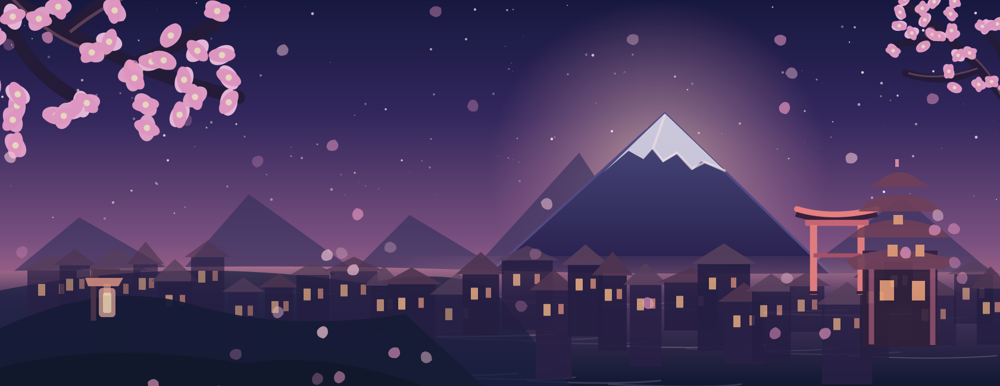
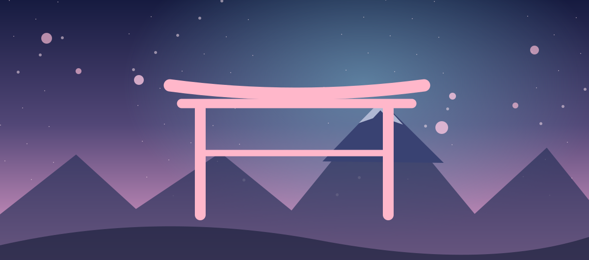
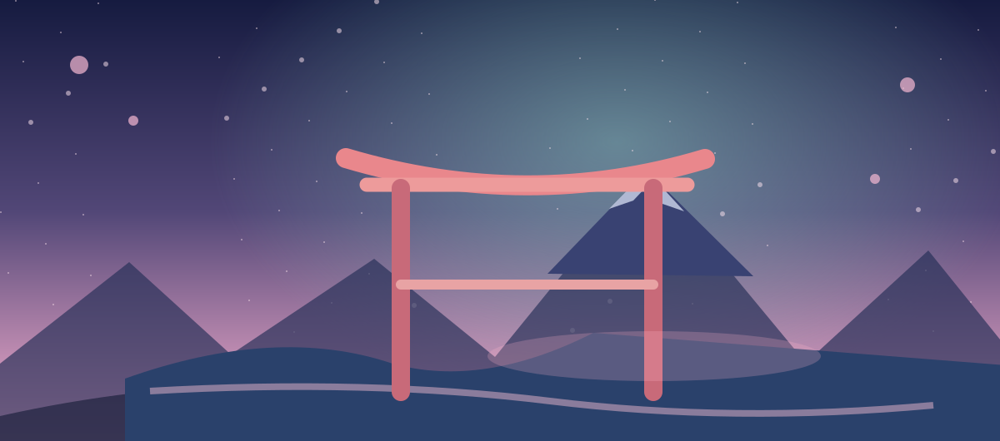
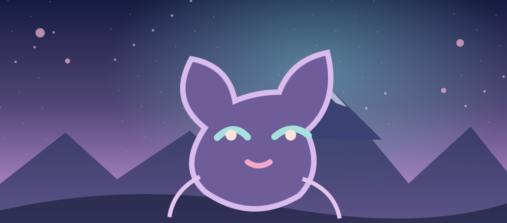

UN MONDO DA ESPLORARE
Yume 3.0
Esplora. Scopri. Collega.
Anime, manga, musica, luoghi e cultura giapponese
in un universo interattivo fatto di storie e passioni.
✦ LE CINQUE ESPERIENZE
Le esperienze di Yume 3.0
Cinque porte per esplorare, collegare e vivere il mondo degli anime e dei manga attraverso le tue passioni.
01 · UNIVERSI NARRATIVIYume UniverseSaghe, stagioni, film e storie collegate. Scopri le costellazioni degli anime.
02 · ADATTAMENTIManga vs AnimeLa stessa storia, due linguaggi. Confronti, differenze e approfondimenti.
03 · EDITORIALEYume MagazineLa rivista mensile di Yume. Articoli, dossier e cultura giapponese.
04 · COLLEZIONISMOYume CollectorScaffali, edizioni, ISBN e report della tua collezione manga e novel.
05 · VIAGGIAnime PilgrimageEsplora il Giappone attraverso i luoghi degli anime e organizza le tappe.
⛩ NUOVO · CULTURA E SCOPERTE
Yume Japan.
Il Giappone degli anime, la cucina, i viaggi, i miti e la storia ora hanno una casa tutta loro all'interno di Yume 3.0.
Entra in Yume Japan
Il Giappone degli anime40 luoghi ↗ Cucina giapponese148 ricette · 165 ingredienti ↗
Viaggio in Giappone141 destinazioni ↗
Yōkai e leggende340 voci ↗ Storia del Giappone21 periodi ↗✿ 16 approfondimenti e 3 itinerari tematici da esplorareScopri i percorsi →
✧ ESPLORA TUTTO IL TUO UNIVERSO
Ricerca unificata
Trova anime, manga, luoghi, confronti e articoli in un unico punto.
Inserisci almeno tre caratteri per avviare la ricerca.
Il viaggio continua nella libreria originale di Yume.
← Torna alla home di Yume